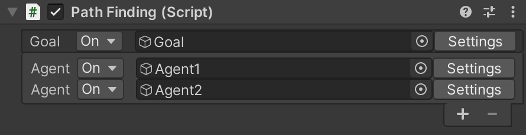
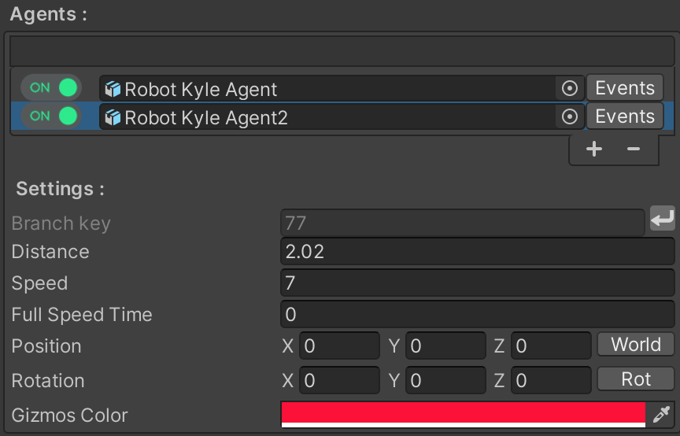
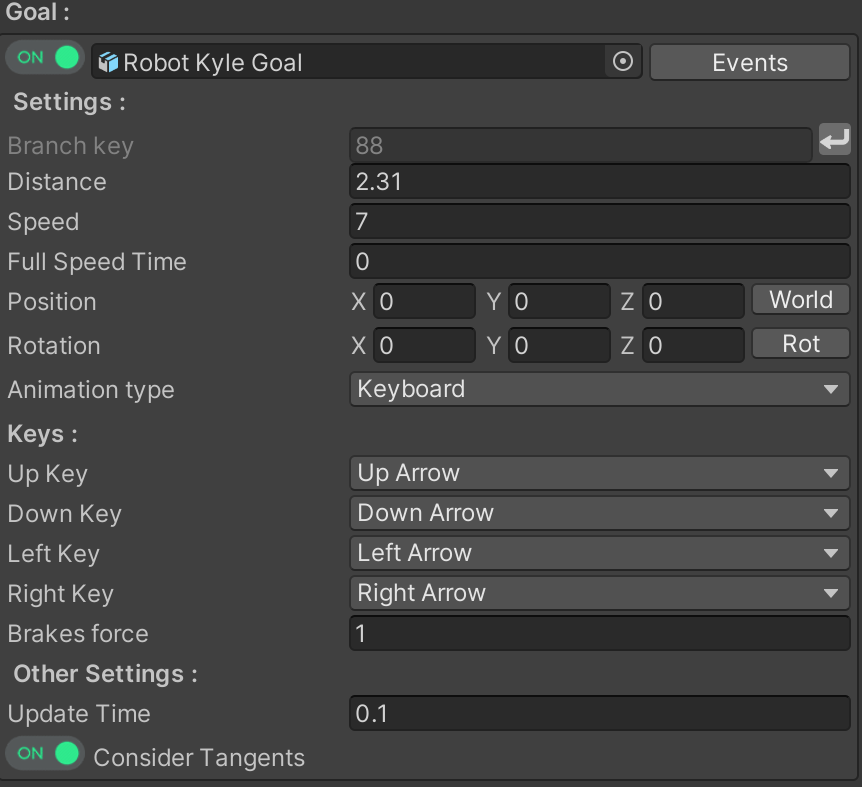
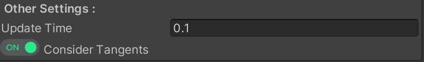
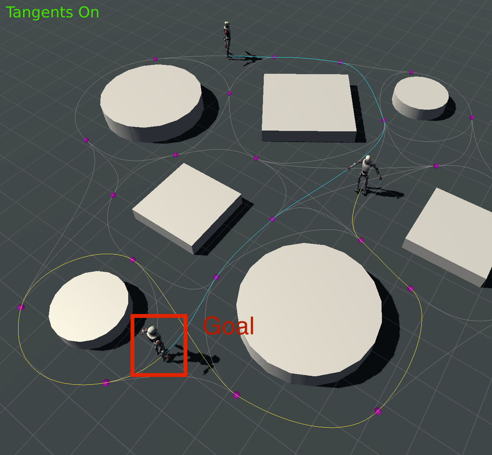
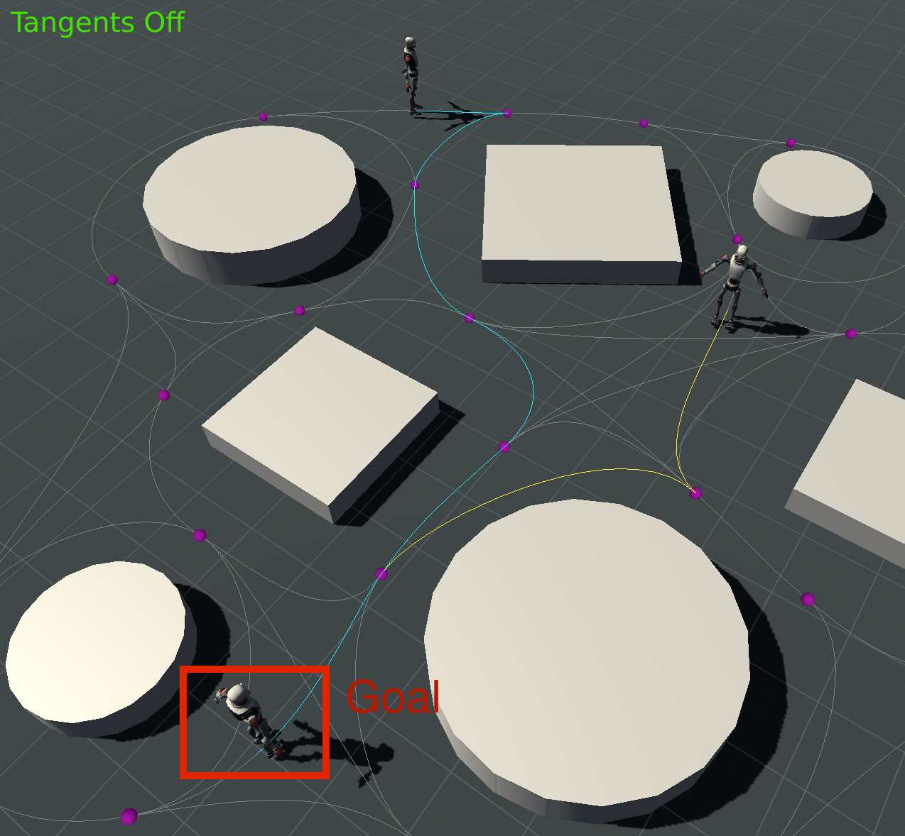

Inspector

Agent

| Variables | Description |
|---|---|
| On/Off switch | Enable/disable agent animation. |
| agent game object slot | The game object that you want to use as an agent. |
| Event Button | Open agent Events swindow |
| Branch key | Agent current branch key , this is the branch key the agent will start path following on , To add the branch key, select the branch from scene view then click on the ‘Return’ button, the key will be added automatically to the field. |
| Distance | The current distance of the agent on the branch, the max is the length of the branch. |
| Speed | The speed of the agent. |
| Full Speed Time | The time it takes the agent to reach full speed. this is used to create a smooth animation at the start and at the end of the follower animation. |
| Position | Translation of the agent with a button to switch between World and local space. |
| Rotation | Rotation of the agent, with a button to turn Rotation On/Off in case it is needed. |
| Gizmos Color | The color of the line gizmo that will display the path found from the agent to the goal |
Goal

| Variables | Description |
|---|---|
| On/Off switch | Enable/disable goal animation. |
| Goal game object slot | The game object that you want to use as a goal for your agent game objects to find. |
| Event Button | Open agent Events swindow |
| Branch key | Current goal branch key in the editor,To add the branch key select the branch from scene view then click on the ‘return’ button, the key will be added automatically to the field |
| Distance | The current distance of the goal on the branch, the max is the length of the branch. |
| Speed | The speed of the goal |
| Full Speed Time | The time it takes the agent to reach full speed. this is used to create a smooth animation at the start and at the end of the follower animation. |
| Position | Translation of the goal with a button to switch between World and local space. |
| Rotation | Rotation of the goal, with a button to turn Rotation On/Off in case it is needed. |
Animation type
| Variables | Description |
|---|---|
| Auto Animated | Move your goal with a defined speed along the spline. |
| Keyboard Input | Move your goal using keyboard inputs, Brake force : this represents the brakes force, the minimum value for this is 1”no impact on goal speed”.brakes force will impact the goal speed as its value goes up, |

| Variables | Description |
|---|---|
| Update Time | The time is sec between each path finding calculation in runtime. |
| Consider Tangents | Consider branches with correct tangents when finding shortest path to goal. |
Tangents On

Tangents Off
